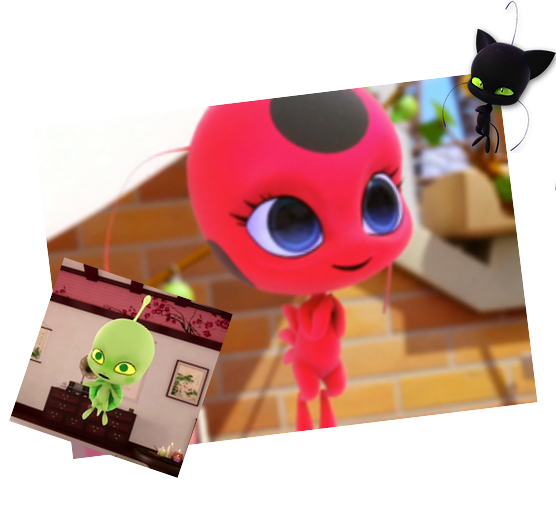
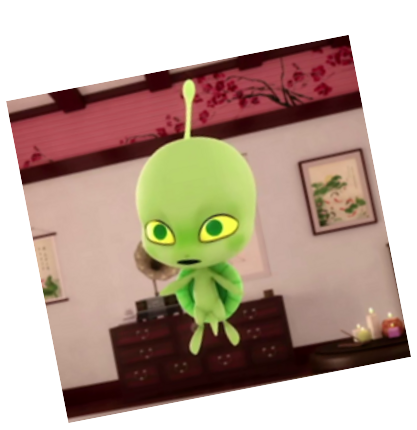
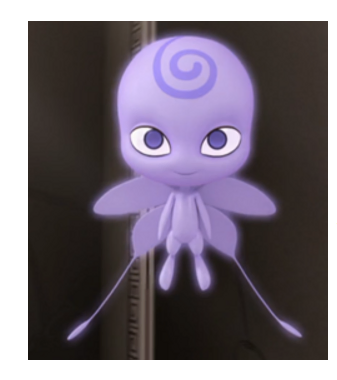
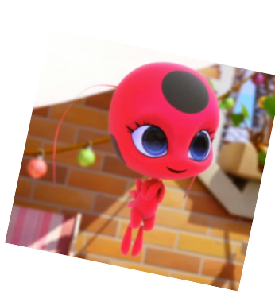
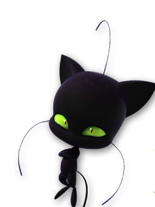

KWAMİLER
Kwamiler

İlk Kwamimiz Wayzz Usta Fu'nun Kwamisidir. Gücü diğer kwamilerin tehlikede olup olmadığını sezmektir. Tabii bu şuana kadar ki bölümlerde görülendir. Belki başka bir gücüde vardır. Kim bilebilir ki?
WAYZZ

İkinci Kwamimiz ise Nooroo. Hawk Moth'un kwamisidir. Gücü nefret duyuları harekete geçen insanları akumazite etmek. Akumazite etme Ladybug ve Chat Noir'in aksesuarlarını (Mucize taşlarını) alarak Hawk Moth'un dünyaya hükmetmesini sağlamaktır.
NOOROO

Üçüncü Kwamimiz ise Tikki. Marinette'nin kwamisidir. Gücü uğur böceği yoyosu yani ''Şanslı Tılsım'' sayesinde gerektiği anda o an ihtiyacın olan nesneleri yaratır. Bunun yanı sıra uğur böceğinin kırdığı akumazite edilmiş eşyalardan çıkan akumayı ''Şanslı Tılsım'' sayesinde kötülüğünü arındırarak, bir kelebeğe dönüştürür. Ancak tılsımını kullandıktan sonra her 1 dakikada küpesindeki bir benek eksilir. Yani 5 dakika sonra dönüşümünü gider. Yemek yiyip enerjisi dolunca yine dönüşebilir.
TIKKI

Dördüncü ve son Kwamimiz Plagg. Adrien'in Kwamisidir. Gücü tüfandır (felaket). Tüfan gerektiği an bir nesneyi yok edebilir. Bu bir ''MUCİZE'' de olabilir. Felaketi kullandıktan sonra kara kedinin yüzüğünden bir dakikada 1 pençe eksilir. Yani 5 dakika sonra dönüşümü gider. Yemek yiyip enerjisini doldurunca yine dönüşebilir.